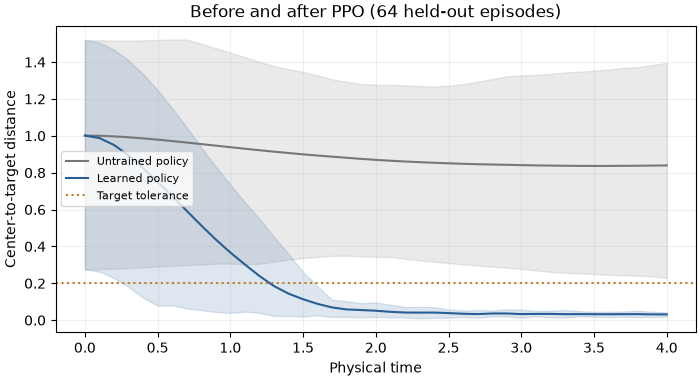
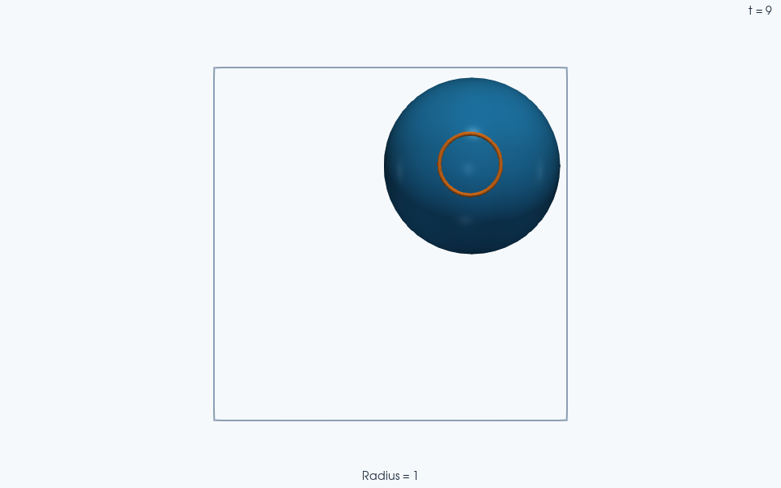

Note
Go to the end to download the full example code.
Intro to JaxDEM reinforcement learning#
Train a continuous-action policy with
PPOTrainer to steer a sphere toward
a target inside a reflective box using
SingleNavigator and a
SharedActorCritic MLP.
Install JaxDEM[rl,io] and matplotlib to run this tutorial. Follow-up
RL guides cover custom logging (Log a custom training metric), multi-policy
vmap training (Batch train eight policies), and custom non-neural
policies (Drive vectorized environments with a custom policy).
import tempfile
from pathlib import Path
import jax
import jax.numpy as jnp
import matplotlib.pyplot as plt
import numpy as np
import optax
from flax import nnx
import jaxdem as jdem
import jaxdem.rl as rl
from jaxdem import utils
from jaxdem.rl.env_wrappers import vectorise_env
Environment, Model, and Action Space#
Scalar environments use shape (max_num_agents, features) for observations
and actions; vectorise_env() prepends an
environment batch axis. skip_frames=k repeats each policy action for
1 + k physics steps (here 50 steps = 0.1 time units).
MaxNormSpace smoothly
bounds continuous force magnitudes to max_norm=3.0 via a differentiable
bijector (so PPO retains exact log-probabilities without hard clipping):
num_steps_epoch = 32
skip_frames = 49
num_envs = 32
num_epochs = 64
env = rl.Environment.create(
"single_navigator",
min_box_size=4.0,
max_box_size=4.0,
max_steps=2000,
friction=2.0,
action_alpha=1.0,
)
model = rl.Model.create(
"SharedActorCritic",
key=nnx.Rngs(jax.random.key(1)),
architecture=[32, 32],
observation_space_size=env.observation_space_size,
action_space_size=env.action_space_size,
action_space=rl.ActionSpace.create("max_norm", max_norm=3.0),
)
Configure PPO#
Each epoch collects num_envs * num_steps_epoch = 1024 transitions and
performs num_minibatches = 16 updates of size 256 (4 passes per
rollout). SingleNavigator rewards progress toward the target via a
distance potential \(r_t = e^{-2 d_{\mathrm{end}}} - e^{-2 d_{\mathrm{start}}}\).
tr = rl.Trainer.create(
"PPO",
env=env,
model=model,
key=jax.random.key(6),
optimizer=optax.adam,
num_steps_epoch=num_steps_epoch,
num_envs=num_envs,
num_epochs=num_epochs,
skip_frames=skip_frames,
num_minibatches=16,
minibatch_size=256,
learning_rate=3e-3,
ppo_entropy_coeff=1e-4,
ppo_value_coeff=0.5,
)
Held-Out Evaluation Helper#
Reserve 64 fixed reset states outside training to compare the policy before
and after PPO. tr.model returns the merged Flax NNX model; calling
policy_output() selects the deterministic
representative action (mapped through MaxNormSpace):
held_out_env = vectorise_env(env, n=64)
held_out_env = held_out_env.reset(
held_out_env, jax.random.split(jax.random.key(101), 64)
)
@jax.jit
def _eval_rollout(graphdef, graphstate, environments):
eval_model = nnx.merge(graphdef, graphstate)
eval_model.eval()
def step(current, _):
dist, _val = eval_model(current.observation(current), sequence=False)
action = eval_model.policy_output(dist)
current, _terminated, _truncated = utils.advance_action(
current, action, skip_frames=skip_frames
)
distance = jnp.linalg.norm(
current.state.pos_c - current.env_params["objective"], axis=-1
)
return current, distance
_final, distances = jax.lax.scan(step, environments, None, length=40)
return distances[..., 0]
def evaluate_policy(trainer, environments):
m = trainer.model
m.eval()
gd, gs = nnx.split(m)
return np.asarray(_eval_rollout(gd, gs, environments))
initial_distances = np.linalg.norm(
np.asarray(held_out_env.state.pos_c - held_out_env.env_params["objective"]), axis=-1
)[:, 0]
untrained_distances = evaluate_policy(tr, held_out_env)
Train with PPO#
For standard runs with TensorBoard logging and progress bars, call
tr = tr.train(tr, directory=...) (see Log a custom training metric).
Calling epoch() directly
lets you inspect metrics or implement custom stopping logic:
for epoch in range(num_epochs):
tr, _transitions, metrics = tr.epoch(tr, jnp.asarray(epoch, dtype=int))
if epoch == 0 or (epoch + 1) % 16 == 0:
print(
f"Epoch {epoch + 1:2d}: loss={float(metrics['loss']):.4g}, "
f"mean score={float(metrics['score']):.4g}"
)
tr.env.system.check_overflow()
Epoch 1: loss=-0.0004063, mean score=0.00163
Epoch 16: loss=-0.000873, mean score=0.02387
Epoch 32: loss=0.004831, mean score=0.02205
Epoch 48: loss=-0.0004654, mean score=0.02066
Epoch 64: loss=0.005874, mean score=0.01269
Compare Before and After Training#
Plot mean center-to-target distance (and 10th–90th percentile band) across the 64 held-out episodes:
trained_distances = evaluate_policy(tr, held_out_env)
success_radius = 0.2
print(
f"Mean final distance (untrained -> learned): "
f"{untrained_distances[-1].mean():.4f} -> {trained_distances[-1].mean():.4f}"
)
print(
f"Reached within {success_radius}: "
f"{np.mean(trained_distances[-1] < success_radius):.1%}"
)
decision_interval = float(np.asarray(held_out_env.system.dt).reshape(-1)[0]) * (
1 + skip_frames
)
eval_time = decision_interval * np.arange(trained_distances.shape[0] + 1)
fig, axis = plt.subplots(figsize=(7, 3.8), layout="constrained")
for label, distances, color in (
("Untrained policy", untrained_distances, "#777777"),
("Learned policy", trained_distances, "#275e94"),
):
full = np.vstack((initial_distances, distances))
axis.plot(eval_time, full.mean(axis=1), label=label, color=color)
low, high = np.quantile(full, [0.1, 0.9], axis=1)
axis.fill_between(eval_time, low, high, color=color, alpha=0.15)
axis.axhline(success_radius, color="#c07d28", ls=":", label="Target tolerance")
axis.set(
xlabel="Physical time",
ylabel="Center-to-target distance",
title="Before and after PPO (64 held-out episodes)",
)
axis.legend(fontsize=8)
axis.grid(alpha=0.2)
plt.show()

Mean final distance (untrained -> learned): 0.8392 -> 0.0314
Reached within 0.2: 100.0%
Roll Out the Learned Policy Across Multiple Targets and Export VTK#
Extract the trained model via tr.model, split it into static graphdef
and array graphstate for env_step(),
and guide the sphere through three sequential targets:
decisions_per_frame = 2
frames_per_target = 15
evaluation_steps = 3 * frames_per_target * decisions_per_frame
env.env_params["max_steps"] = jnp.asarray(
evaluation_steps * (1 + skip_frames) + 1, dtype=int
)
env = env.reset(env, jax.random.key(202))
env.state = jdem.State.create(
pos=jnp.array([[2.0, 2.0]]), rad=jnp.ones(1), mass=jnp.ones(1)
)
env.state, env.system = jdem.System.initialize(env.state, env.system)
demo_targets = jnp.array([[2.9, 1.1], [1.1, 2.9], [2.9, 2.9]])
env.env_params["objective"] = demo_targets[0:1]
base_model = tr.model
base_model.eval()
base_model.reset(shape=(env.max_num_agents, 1), mask=None)
graphdef, graphstate = nnx.split(base_model)
@jax.jit
def policy_model(obs, key, graphstate, graphdef):
m = nnx.merge(graphdef, graphstate)
dist, _val = m(obs, sequence=False)
action = m.policy_output(dist)
_, graphstate = nnx.split(m)
return action, graphstate
frames_dir = Path(tempfile.mkdtemp(prefix="jaxdem-rl-tutorial-"))
scene_states = [env.state]
scene_systems = [env.system]
scene_targets = [np.asarray(env.env_params["objective"]).copy()]
with jdem.VTKWriter(directory=frames_dir) as writer:
marker = jdem.State.add(
env.state, pos=env.env_params["objective"], rad=env.state.rad / 5
)
writer.save(marker, env.system)
for target_idx in range(3):
d0 = float(jnp.linalg.norm(env.state.pos_c - env.env_params["objective"]))
for _ in range(frames_per_target):
env, tr.key, graphstate = utils.env_step(
env,
policy_model,
tr.key,
graphstate,
graphdef=graphdef,
n=decisions_per_frame,
skip_frames=skip_frames,
)
scene_states.append(env.state)
scene_systems.append(env.system)
scene_targets.append(np.asarray(env.env_params["objective"]).copy())
marker = jdem.State.add(
env.state, pos=env.env_params["objective"], rad=env.state.rad / 5
)
writer.save(marker, env.system)
d1 = float(jnp.linalg.norm(env.state.pos_c - env.env_params["objective"]))
print(f"Target {target_idx}: distance {d0:.3f} -> {d1:.3f}")
if target_idx < 2:
env.env_params["objective"] = demo_targets[target_idx + 1 : target_idx + 2]
env.system.check_overflow()
print(f"Exported {len(scene_states)} VTK frames to: {frames_dir}")

Orange rings mark the environment’s actual targets. They are display annotations projected in front of the agent spheres, with radius 0.35; they are not extra simulated particles.
Target 0: distance 1.273 -> 0.059
Target 1: distance 2.494 -> 0.040
Target 2: distance 1.819 -> 0.027
Exported 46 VTK frames to: /tmp/jaxdem-rl-tutorial-uri8t2p1
Total running time of the script: (0 minutes 16.080 seconds)